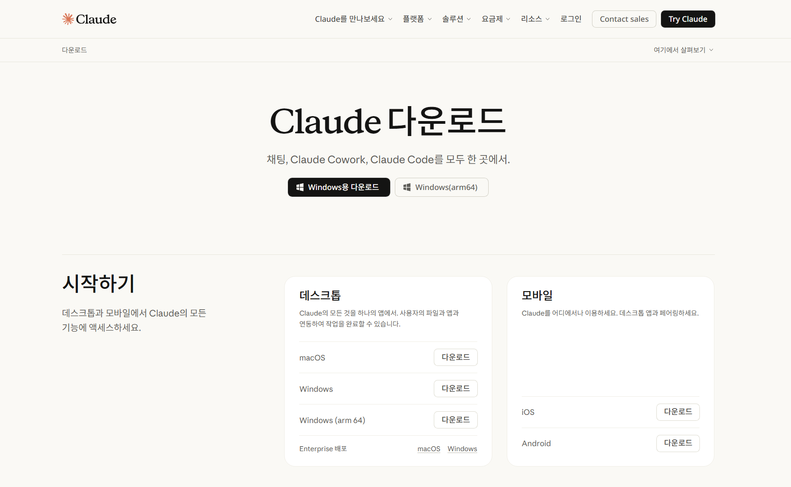
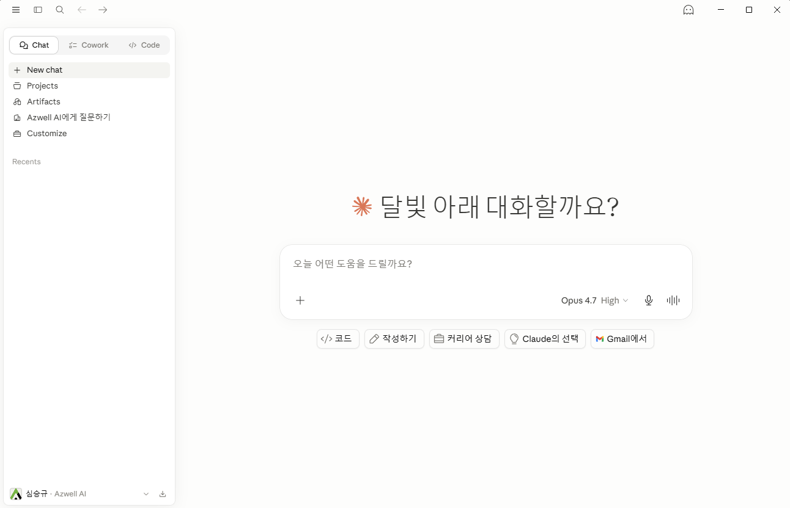
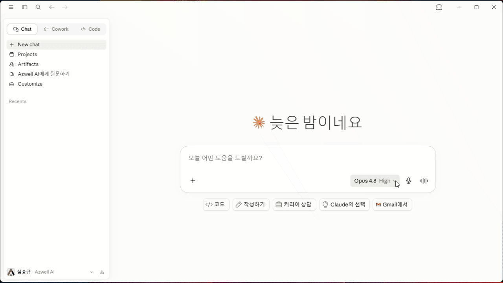
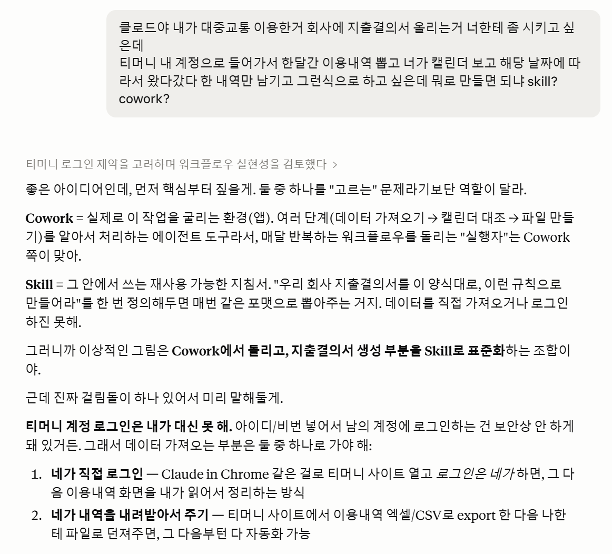
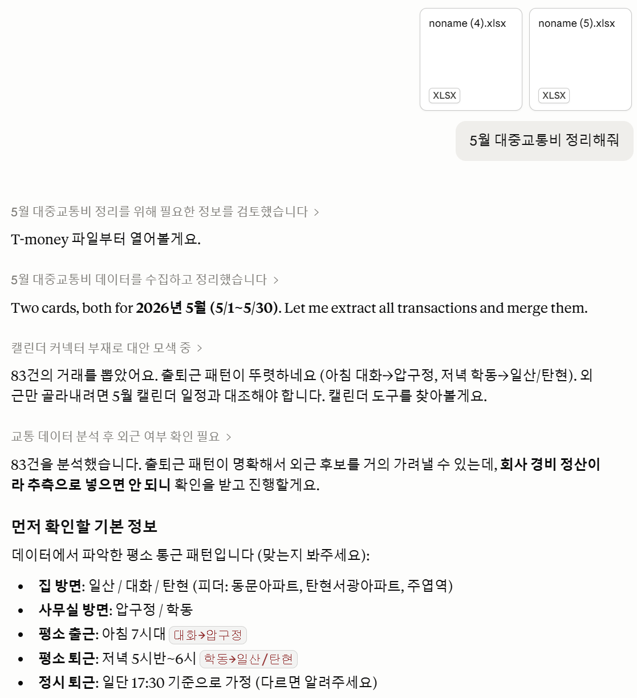
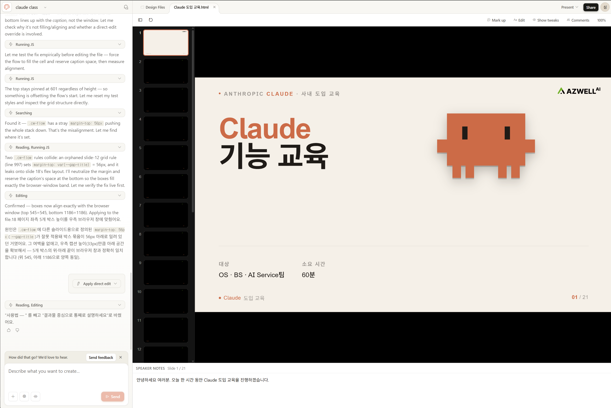

1. 글쓰기 / 문서 작성
템플릿
너는 [역할]이야. [읽는 사람]을 대상으로 [무엇]을 써줘. 목적: [얻고 싶은 것] / 형식: [길이·구조] / 톤: [격식·친근] / 조건: [피할 것, 꼭 넣을 것]
채운 예시
너는 홍보 담당자야. 회사 SNS 팔로워를 대상으로 신제품 출시 안내글을 써줘. 목적은 구매가 아니라 사전 알림 신청 유도. 인스타그램 캡션 3문장 + 행동 유도 한 줄, 친근한 반말 톤. 과장된 마케팅 표현은 빼줘.
Claude는 Anthropic이 만든 AI 어시스턴트입니다. 단순히 질문에 답하는 챗봇을 넘어서, 긴 문서를 이해하고 글·코드·자료 분석과 여러 단계의 업무를 함께 처리합니다.
claude.ai를 기반으로, 여섯 가지 도구를 차례로 살펴봅니다. 설명은 Claude 윈도우 앱 설치를 기준으로 진행합니다.
window 앱을 내려받고, 설치 후 계정으로 로그인 합니다.

왼쪽 메뉴를 기준으로, 실제 업무에서 어떻게 활용할지 이제부터 알아보겠습니다.

Claude는 모델에 따라 속도, 깊이, 사용량 소모가 달라집니다. 작업 난이도에 맞춰 선택하면 답변 품질과 사용량을 함께 조절할 수 있습니다.

가벼운 초안, 짧은 요약, 문장 다듬기처럼 빠르게 확인할 작업에 적합합니다.
메일 작성, 회의 정리, 자료 구조화처럼 속도와 품질의 균형이 필요한 일반 업무에 적합합니다.
전략 검토, 복잡한 비교, 리스크 분석처럼 깊은 추론이 필요할 때 사용합니다. 사용량 소모가 큰 편이라 중요한 작업에 집중해서 쓰는 것이 좋습니다.
좋은 프롬프트는 길게 쓰는 기술이 아니라, Claude가 추측하지 않아도 되게 중요한 정보를 먼저 채우는 일입니다.
[누구로서] + [무엇을] + [어떤 형태로] + [어떤 조건으로]
이 네 칸 중 중요한 칸이 비어 있으면 AI가 알아서 추측합니다. 그 추측이 빗나가면 결과도 엉뚱해집니다.
“전문 편집자로서”, “비판적인 검토자 입장에서”처럼 역할과 관점을 줍니다.
결과물만 말하지 말고 목적까지 줍니다. “5분 안에 발표할 수 있게 요약해줘”처럼요.
길이, 구조, 톤, 읽는 사람을 지정하면 답이 바로 쓰기 좋아집니다.
전문용어 제외, 추측 표시, 금지사항처럼 지켜야 할 선을 알려줍니다.
글쓰기, 학습, 검토처럼 바로 쓰는 세 가지 상황만 남겼습니다. 대괄호 안을 내 업무 상황에 맞게 바꾸면 됩니다.
템플릿
너는 [역할]이야. [읽는 사람]을 대상으로 [무엇]을 써줘. 목적: [얻고 싶은 것] / 형식: [길이·구조] / 톤: [격식·친근] / 조건: [피할 것, 꼭 넣을 것]
채운 예시
너는 홍보 담당자야. 회사 SNS 팔로워를 대상으로 신제품 출시 안내글을 써줘. 목적은 구매가 아니라 사전 알림 신청 유도. 인스타그램 캡션 3문장 + 행동 유도 한 줄, 친근한 반말 톤. 과장된 마케팅 표현은 빼줘.
템플릿
[주제]를 [수준]에게 설명해줘. 초점: [원리보다 활용? 핵심 개념?] / 비유: [친숙한 것] / 분량: [ ] / 끝에: [오해·예시·요약]
채운 예시
환율이 오르고 내리는 원리를 경제 잘 모르는 사람한테 설명해줘. 복잡한 이론 말고 ‘왜 내 해외직구 가격이 바뀌는지’ 관점에서, 시장 물건값 비유로 5문장 정도로. 끝에 흔한 오해 하나만 짚어줘.
템플릿
[내 결과물]을 검토해줘. 관점: [비판적으로·독자 입장] / 봐야 할 것: [논리·오타·설득력] / 형식: 잘된 점 → 고칠 점 → 구체적 수정 제안
채운 예시
아래 발표 대본을 검토해줘. 청중은 우리 제품을 처음 듣는 투자자야. 냉정한 투자자 입장에서 설득력이 약한 부분과 빠진 근거를 짚어줘. 잘된 점 → 약한 점 → 수정 제안 순서로. 칭찬은 짧게.
끝에 “요약 한 줄을 붙여줘”, “부족하면 먼저 물어봐”처럼 다음 행동을 넣으면, Claude가 멈추지 않고 더 쓸 만한 답으로 이어갑니다.
관련 자료와 작업 지침을 한곳에 묶어두면, 그 프로젝트 안의 모든 대화에서 Claude가 같은 맥락을 참고한 상태로 답합니다.

프로젝트에 올린 파일·지식은 그 안의 모든 대화에서 공유됩니다. 제품 카탈로그, 사내 양식, 회계 규정처럼 반복해서 쓰는 자료에 적합합니다.
“답변은 항상 존댓말”, “표 형식 선호”, “우리 회사명은 AZWELL”처럼 팀의 양식·말투·규칙을 Custom Instructions로 저장합니다.
좌측 메뉴에서 Projects → 새 프로젝트 생성 → 참고 파일 업로드 → 프로젝트 지침 작성 후, 그 프로젝트 안에서 질문하면 됩니다.
핵심은 “한 번 말한 걸 또 말해야 한다”는 불편을 줄이는 것입니다. 자료와 규칙을 프로젝트에 올려두면 질문이 훨씬 짧아집니다.
사내 회계 규정과 전년도 세무 자료를 올려둡니다.
계정과목, 신고 관련 질문을 던지면 우리 회사 기준에 맞춰 답합니다. 매번 배경 설명을 다시 할 필요가 없습니다.
전 제품 스펙, 가격, 경쟁사 비교 자료를 올려둡니다.
“○○ 고객용 제안서 초안”처럼 반복되는 영업 질문을 빠르게 처리합니다.
API 문서와 아키텍처 설명을 프로젝트에 모아둡니다.
코드 리뷰, 기술 문서 정리, 신규 기능 설계를 일관된 개발 맥락에서 이어갈 수 있습니다.
파일을 일일이 다운로드해서 첨부하지 않아도, Claude가 본인 권한 안에서 도구의 내용을 읽고 작업합니다.

Google Drive, Gmail, 캘린더, Notion, Microsoft 365 같은 외부 도구를 Claude와 연결하는 기능입니다. 연결은 본인 계정 권한 범위 안에서만 동작합니다.
연결만 해두면 Claude가 드라이브·메일·노션을 직접 열어 부서별 반복 작업의 출발점을 만들어줍니다.
“구글 드라이브에서 이번 달 지출결의서 파일 찾아서, 품의서 항목과 금액이 매칭되는지 확인해줘.”
전자결재 매칭 작업의 출발점으로 쓰고, 세무 신고 자료에서 이번 분기 변경 항목만 뽑아낼 수 있습니다.
“Gmail에서 지난주 고객 문의 메일을 모아 제품별로 분류하고, 답장 초안을 만들어줘.”
드라이브 딜 목록과 신규 등록 건을 비교해 중복 딜을 찾는 등 영업 후속 작업을 빠르게 시작합니다.
“Notion 개발 위키에서 빌링 모듈 관련 문서를 찾아 현재 정책을 요약해줘.”
드라이브의 API 사용 로그를 읽어 고객별 사용량을 정리하는 등 제품 운영 자료를 바로 분석합니다.
설정 메뉴를 뒤질 필요 없이, 만들고 싶은 작업을 말하면 Claude가 되물으며 규칙을 함께 정리해 저장합니다.
작업 처리 방법·설명·자료를 한 번 묶어두면, 필요할 때 자동으로 같은 기준이 적용되는 반복 업무 레시피입니다.
추가/제거·계정 매핑 기준을 정리해, 매달 데이터만 넣으면 동일 기준으로 필터링합니다.
구조·톤·필수 항목을 고정해, 고객사만 바꿔도 일관된 제안서를 만듭니다.
팀 컨벤션을 고정해, 매 리뷰마다 같은 기준으로 점검하고 누락을 줄입니다.
만들고 싶은 반복 업무를 한 문장으로 말합니다. 메뉴를 찾을 필요가 없습니다.
제안서 작성 표준 스킬 만들어줘Claude가 사용 시점·구조·톤·필수 항목을 물으면 대화로 답하며 규칙을 정합니다.
사내 양식·로고·우수 사례 파일을 채팅에 첨부하면 스킬에 함께 묶입니다.
Claude가 대화 내용을 스킬로 정리해 저장합니다. 이후 한 줄이면 자동 적용됩니다.
이대로 저장해줘○○ 고객용 제안서 초안 만들어줘 한 줄로 같은 구조·톤·필수 항목이 자동 적용됩니다.
한 번 대화로 만들어 두면, 다음 달부턴 파일만 던져도 같은 기준으로 정리됩니다.


결과를 글로 설명하는 수준이 아니라, 다운로드 가능한 .xlsx · .pptx · .docx 파일을 바로 산출합니다.
데이터 정리·수식·피벗·차트, 양식 자동 채우기, 데이터 필터링/매칭.
발표 자료·제안서 슬라이드를 구조와 디자인까지 갖춰 제작.
보고서·공문·계약서·회의록 등 서식을 갖춘 문서 작성.
이 데이터로 엑셀 표와 차트 만들어줘이 내용으로 10장짜리 제안 PPT 만들어줘열 추가하고 합계 수식 넣어줘 — 수정도 가능베타 · Excel·PowerPoint 안에서 직접 Claude를 호출하는 애드인 방식도 제공됩니다.
전자결재 일반품의서–지출결의서 매칭 표를 만들고, 금액 불일치 건 표시 (Excel)
연결재무제표 작성 시 추가/제거 데이터를 기준에 맞게 필터링
영업 데이터로 월별 매출·딜 현황 대시보드 엑셀, 고객 제안용 PPT 초안 제작
API 사용량 로그(csv)로 고객별 빌링/청구 요약 시트 생성
Cowork 왼쪽 사이드바의 메뉴를 순서대로 설명합니다. 각 메뉴가 무엇을 하는 곳인지와 실제 요청 예시를 함께 봅니다.
하고 싶은 일을 결과물 중심으로 통째로 설명하면 시작. 계획 → 단계별 수행 → 완성 파일 산출.
이 폴더의 매출 엑셀로 월간 요약 보고서를 만들어줘
관련 파일·지침을 묶어두는 작업 공간. 한 번 올려두면 매번 설명 없이 같은 맥락에서 진행.
"결산 프로젝트"에 회계 규정·전월 자료 두고 매달 결산
주기를 한 번만 정하면 정기적으로 알아서 실행. 반복 업무에 가장 강력.
매주 금요일 대시보드 수치를 주간 보고서 템플릿에 채워줘
열 때마다 최신 데이터로 자동 갱신되는 대시보드/페이지. 수정마다 버전 기록. 말로 만드는 사내 대시보드.
프로젝트별 미결 업무 현황 대시보드 — 드라이브·노션에서
외부에서 휴대폰으로 데스크톱 Cowork에 작업을 시키고 결과를 받음. 외근·이동 중 유용.
이동 중에 — 어제 그 파일 찾아서 회의용으로 정리해둬
커넥터 연결, 스킬·플러그인 추가, 작업 지침 설정. 도구를 붙일수록 더 많이 자동화.
드라이브·Gmail 연결 + "제안서 작성 표준" 스킬 등록
"어떻게 하는지"가 아니라 "무엇을 만들어 달라"를 말하면 됩니다. 매번 반복하는 일일수록 예약 작업으로 묶을 때 효과가 큽니다.
Claude 데스크톱 앱에서 Cowork를 엽니다.
작업할 폴더를 지정하고 필요한 커넥터 연결·권한을 확인합니다.
이 데이터로 월간 보고서를 만들어줘처럼 결과물 중심으로.
계획 → 단계별 수행 → 완성 파일 산출. 정기 업무면 예약 작업으로 등록.
"어디까지 자동화 가능한지 모르겠다"면 — 일단 결과물 중심으로 말로 설명하는 것부터 시작하세요.
실제 작동 화면 — 목표만 말하면 계획 → 단계별 수행 → 산출까지 자율로 진행하고, 진행 상황과 생성 파일을 실시간으로 확인합니다.
시작 팁 — 일단 New task로 업무를 말로 설명해 보고, 매번 반복하는 일은 Scheduled로, 계속 들여다보는 현황은 Live artifacts로 옮기면 효과가 큽니다.
디자인 전문 툴 없이도 SNS 이미지·그래픽·시각 자료를 빠르게 만들고, 결과를 보며 반복 수정합니다.

핵심 차이 — 글로 설명 듣는 게 아니라, 시안을 직접 보며 고쳐 원하는 결과에 빠르게 도달합니다.
원래는 개발자를 위한 코딩 에이전트지만, 폴더 안 파일을 직접 다루는 도구라 꼭 개발자가 아니어도 일반 업무에 쓸 수 있습니다.
코드 작성뿐 아니라 여러 파일을 읽고·수정하고, 버그를 찾아 고치고, 테스트까지 수행합니다. 내 컴퓨터의 폴더를 지정하거나 SSH로 서버에 접속해 작업할 수도 있습니다. 다만 꼭 개발자만 쓸 필요는 없어서 — 폴더 정리, 파일 찾기, 이름 일괄 변경, 여러 파일 검색·취합 같은 일반 업무에도 활용됩니다.
○○ 들어간 파일 다 찾아줘”코딩 Agent · 제품/VLM 개발 · 서버 작업 니즈에 직접 대응하면서, 파일·폴더 정리 같은 일반 업무에도 그대로 쓸 수 있습니다.
오늘 살펴본 여섯 가지 도구를 실제 업무에 하나씩 적용해 보세요.
궁금한 점은 언제든 편하게 문의해 주세요.